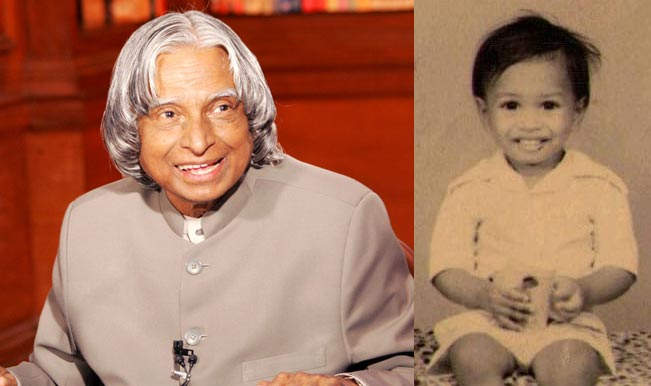

"You cannot change your future, but, you can change your habits, and surely your habits will
change your future."
Early Life
Dr. APJ Abdul Kalam was born on October 15, 1931, in Rameswaram, Tamil Nadu, India.
He came from a modest background and had to overcome many challenges to pursue his education.
Kalam graduated in physics from St. Joseph's College, Tiruchirappalli, and later completed his aerospace engineering studies at the Madras Institute of Technology.

Achievements
Dr. APJ Abdul Kalam made significant contributions to India's space and missile programs.
He played a crucial role in the development of the Polar Satellite Launch Vehicle (PSLV) and the Agni and Prithvi missiles.
Kalam served as the 11th President of India from 2002 to 2007, during which he was widely regarded as the "People's President" for his inspirational leadership.
Legacy
Dr. APJ Abdul Kalam's legacy extends beyond his scientific and political accomplishments.
He was a great advocate for education and inspired countless young minds to pursue their dreams.
Kalam believed in the power of technology to transform society and often spoke about the importance
of innovation and entrepreneurship.
Some of the Quotes of our Legend :--
"Dream, dream, dream. Dreams transform into thoughts and thoughts result in action."
"You have to dream before your dreams can come true."
"Don't take rest after your first victory because if you fail in the second, more lips are waiting to say that your
first victory was just luck."